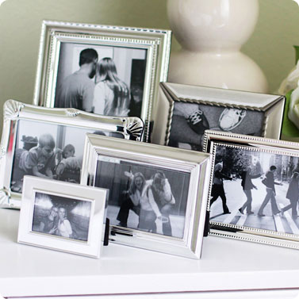
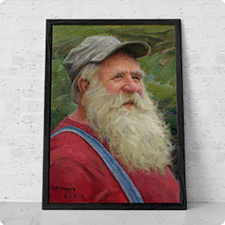
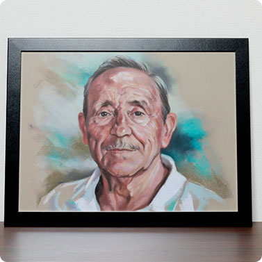

Памятный портрет «Воспоминание»
Памятный ретроспективный портрет. Бережно восстанавливаем
или корректируем изображение человека по фотографии
или корректируем изображение человека по фотографии
Бережно восстанавливаем или корректируем изображение человека по фотографии
Пишем реалистичный, «живой» портрет. По вашему желанию в портрет добавляем яркость и плавные полутени, выравниваем контрастность и придаем особое «свечение».
«Воспоминание» выглядит ярко и чисто
В работе мы используем только экологические высококачественные материалы — льняной холст, высокотехнологичный грунт, масляные краски на основе природных пигментов. Представьте себе, что этот человек гордится и любуется этой работой. Вашей заботой!
ЗАЧЕМ СТОИТЬ ЗАКАЗЫВАТЬ «ВОСПОМИНАНИЕ»?
- Установите памятный портрет в своем домеА также в офисе или галерее и таким образом выразите благодарность умершему человеку за его добрые дела, милосердие и благородные качества, поддержку и помощь
- Сохраните память для следующих поколенийУстановите портрет в своем доме на почетном месте. Ваши дети, внуки и правнуки буду знать своих предков и чтить их память
- Напомните близким людям умершего человекаО том, что вы скорбите вместе с ними и проявите свою сопричастность к церемониям